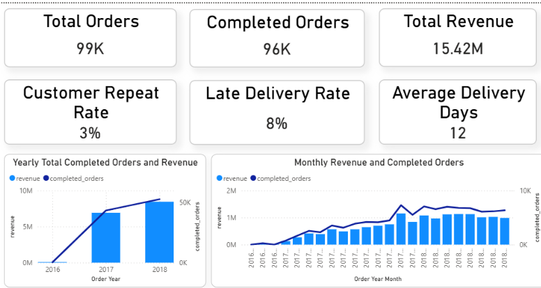
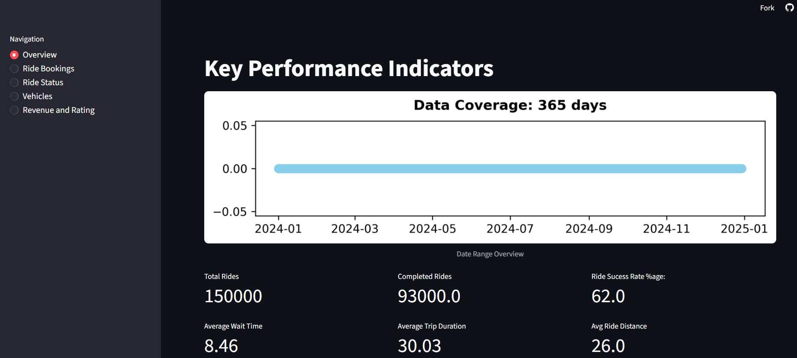
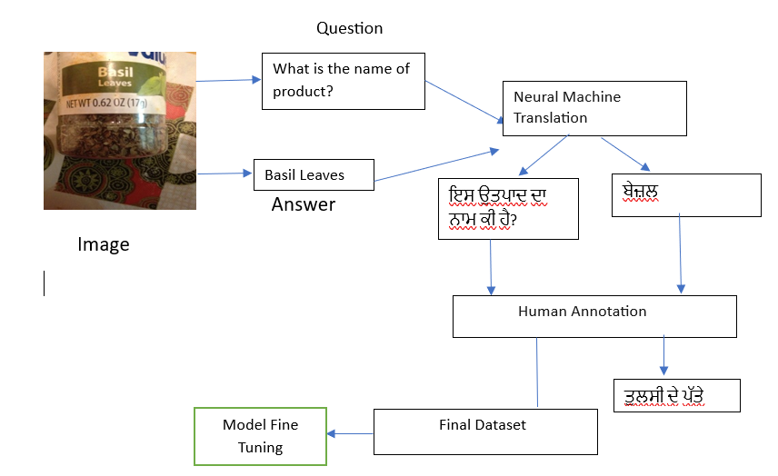

Skills
Python
SQL

Power BI

Excel
Pandas
NumPy
Scikit-learn

Machine Learning
I enjoy working with data and uncovering patterns that help explain real-world business scenarios and support better decision-making. I focus on transforming raw data into meaningful insights through structured analysis and visualization. I have worked on projects such as Uber data analysis and e-commerce data analysis, where I performed data cleaning, exploratory data analysis, feature extraction, and data visualization to identify trends and generate actionable insights. In addition to data analysis, I am also interested in predictive modeling. I worked on a Punjabi Visual Question Answering system, where I applied concepts such as neural machine translation and model fine-tuning to solve a complex problem involving both language and visual data. I enjoy building solutions end-to-end—from data preprocessing and analysis to modeling—and I am continuously improving my skills in data analytics and data science.
Python
SQL
Power BI
Excel
Pandas
NumPy
Scikit-learn
Machine Learning

See Live VideoEcommerce Data Analysis: Tools - SQL, Python, Power BI | Insights - Analyzed Orders, Revenue and Purchase Rate

See LiveUber Rides Data Analysis: Tools - Python, Matplotlib, streamlit | Insights - Analyzed Temporal and Location based trends, Revenue, Reasons for Cancellations

Punjabi Visual QA: Tools - Python, Model Fine Tuning | Insights - Built a system to answer visual questions in Punjabi, combining language and image data.
Feel free to reach out for opportunities, collaborations, or any queries.
Email: abhijeetkaur97@gmail.com